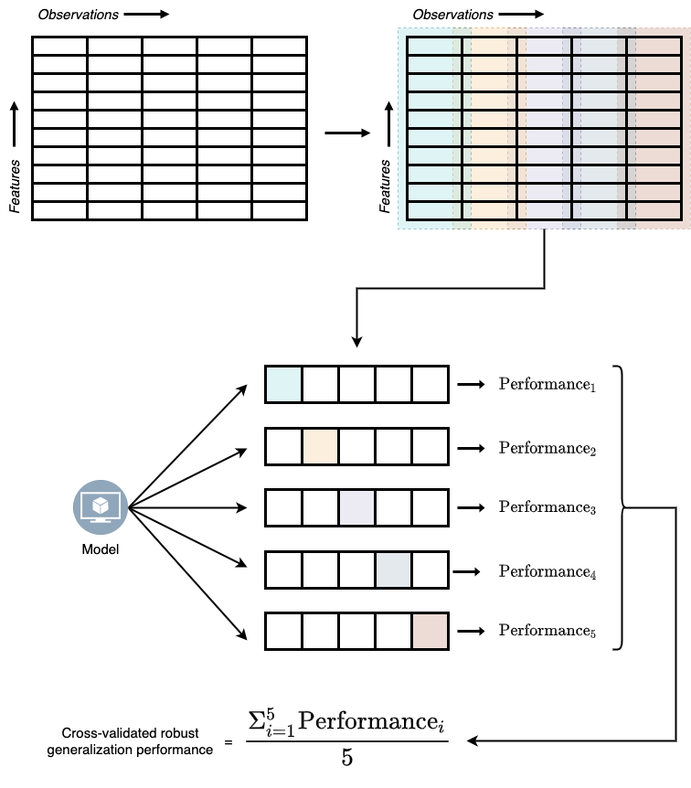
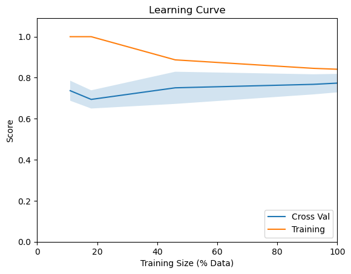

@sk_import model_selection: train_test_split;
features_train, features_test,
target_train, target_test = train_test_split(features,
target, test_size=0.3, random_state=42);4 Generalizability
4.1 Did our model cheat?
In the last chapter, we learned how to check our model’s performance using various metrics. But how do we know that our model really learned the patterns in the data and is not cheating by rote-memorizing the data? Think about how we would have assessed a human learner in this situation.
When we want to know if students have really learned what we have asked them to learn, we test students on material that is similar to the material that’s familiar to them but not exactly the questions they have seen before. Similarly, to check if our models have really learned the patterns in the data, we can test our model against a similar but unseen data. The extent to which the model performance remains invariant with this new unseen data is called that model’s generalizability.
The portion of the data we use for training is called the training set and the portion of the data we use to test is called the test set. We can use the train_test_split function from model_selection module in scikit-learn to create this partition.
- The
train_test_splitfunction has three important and mandatory arguments. - The first two are the
featuresand thetarget - The third argument is
test_sizeand specifies the proportion of the data that needs to kept aside for testing. In the above code, we have asked to keep aside 30% of the data as test set.
random_stateis an optional argument and set’s the seed for randomness.
Now, instead of training the model on the entire dataset, we’ll train our model with training set.
@sk_import linear_model: LogisticRegression;
simplelogistic = LogisticRegression();
fit!(simplelogistic, features_train, target_train);Now let’s look at our model’s performance with both training set and test set.
In-sample performance
A model’s performance with training set is also called it’s in-sample performance.
logistic_target_predict_training =
predict(simplelogistic,features_train);
@sk_import metrics: classification_report
print(classification_report(target_train,
logistic_target_predict_training)) precision recall f1-score support
No 0.84 0.91 0.87 166
Yes 0.71 0.56 0.63 66
accuracy 0.81 232
macro avg 0.78 0.74 0.75 232
weighted avg 0.80 0.81 0.80 232Out-of-sample performance
A model’s performance with test set is also called it’s out-of-sample performance.
logistic_target_predict_test =
predict(simplelogistic,features_test);
@sk_import metrics: classification_report
print(classification_report(target_test,
logistic_target_predict_test)) precision recall f1-score support
No 0.72 0.98 0.83 57
Yes 0.95 0.49 0.65 43
accuracy 0.77 100
macro avg 0.84 0.74 0.74 100
weighted avg 0.82 0.77 0.75 100By comparing our model’s performance with both the training set and test set, we can see that the overall accuracy of our model slightly dropped for the test case. We can also see that our model had better precision but a little worse recall and f1-score with the test performance compared to training performance. So, we can conclude that our model has an ok-ish generalizability.
4.2 Cross-validation: A robust measure of generalizability
We can extend the concepts of in-sample and out-of sample performance to create a more robust measure of generalizability. There are two motivations for creating this new robust measure of generalizability:
- When the sample size is small (less data), our training and test performance scores can get flaky and unreliable.
- There are some bells and whistles (which are called hyperparameters) that we can tweak in our models to improve our models’ learning process (This is explained in detail in the coming chapters). If we tweak these hyperparameters with respect to our training data, we might be overfitting our data to the training set (Overfitting happens when our model have high performance on training set but very poor performance on test set.). But instead, if we tweak these hyperparameters with respect to our test data, information in the test data leaks to the model and the data is no more unseen data for the model.
ML developers came up with a solution to this problem by partitioning the training data into different data blocks, holding out one block as test set, and training on the remaining blocks. Then model’s performance on the hold-out test set is saved. This process is repeated until all blocks had its chance of beginning the hold-out test set. Model performance from all these iterations is then averaged to get the robust generalization performance. This process of deriving model performance is called the cross-validation technique and is illustrated in Figure 4.1.

To implement the K-fold cross validation technique we can use the KFold function and cross_validate function model_selection module in scikit-learn.
@sk_import model_selection: KFold
@sk_import model_selection: cross_validate
cv_results = cross_validate(simplelogistic,
features_train, target_train,
cv=KFold(5),
return_estimator=true,
return_train_score=true,
scoring=["accuracy",
"recall_weighted", "precision_weighted"]);cross_validatefunction has three mandatroy arguments: the model, features, and the target. By defaultcross_validateuses 5-folds for cross validation.- If you are interested in measures other than accuracy, you can pass the list of metrics with
scoringargument.
To print the results from cross validation in a more human readable table form, we can use the following lines of code:
cv_df = DataFrame(cv_results)[!,
Not([:estimator, :fit_time, :score_time])]
rename!(cv_df, ["Test Accuracy",
"Test Precision",
"Test Recall",
"Train Accuracy",
"Train Precision",
"Train Recall"])5 rows × 6 columns
| Test Accuracy | Test Precision | Test Recall | Train Accuracy | Train Precision | Train Recall | |
|---|---|---|---|---|---|---|
| Float64 | Float64 | Float64 | Float64 | Float64 | Float64 | |
| 1 | 0.829787 | 0.818237 | 0.829787 | 0.837838 | 0.833854 | 0.837838 |
| 2 | 0.808511 | 0.801009 | 0.808511 | 0.8 | 0.792456 | 0.8 |
| 3 | 0.76087 | 0.742992 | 0.76087 | 0.811828 | 0.804097 | 0.811828 |
| 4 | 0.847826 | 0.851999 | 0.847826 | 0.811828 | 0.805028 | 0.811828 |
| 5 | 0.782609 | 0.782609 | 0.782609 | 0.817204 | 0.808555 | 0.817204 |
To compute the cross validated average model performance measures, we can print the mean of each column in the above table.
describe(cv_df)[!,[:variable, :mean]]6 rows × 2 columns
| variable | mean | |
|---|---|---|
| Symbol | Float64 | |
| 1 | Test Accuracy | 0.80592 |
| 2 | Test Precision | 0.799369 |
| 3 | Test Recall | 0.80592 |
| 4 | Train Accuracy | 0.81574 |
| 5 | Train Precision | 0.808798 |
| 6 | Train Recall | 0.81574 |
describeis a function fromDataFramespackage that returns summary statistics like mean, mode, median, minimum value, maximum value, etc., for a given dataframe. We can use this function to otain the mean values for our performance measures.
4.3 Learning curves: Can more data improve model training?
Now we know how to measure a model’s generalization performance. But what if our models perform poorly in both training and test sets? The scenario where models fit poorly with training and test sets equally is called underfitting. Underfitting usually happens due to one of the two reasons or both: a) our model is too simple for the task at hand, b) we don’t have enough data to learn from.
Solving the first problem is relatively simple; we can train a more complex model on the given dataset. However, solving the second problem can get complicated. Gathering more data may not always be feasible and can be expensive. In such cases, before deciding on acquiring more data, we need to make sure more data will solve the problem of underfitting.
The way we figure out if more data can help with training is by training our model with data of different sizes (e.g., using 10%, 50%, and 100% of our data) and check how the model performance is varying as a function of the sample size. The plot that illustrates this relationship is called learning curves.
We can get our model’s performance at different sample sizes using the learning_curve function from model_selection module in scikit-learn.
@sk_import model_selection: learning_curve;
lc_results = learning_curve(simplelogistic,
features_train,target_train,
train_sizes = [0.06, 0.1, 0.25, 0.5, 0.75, 1.0]);- The values we pass to
train_sizesargument specify the different sample sizes we want to try. In this case we are looking at 10%, 25%, 50%, 75% and 100% of the data.
train_sizes, train_scores, test_scores, =
lc_results[1], lc_results[2], lc_results[3]
using Statistics
# Calculating the error bars
y_ax = vec(mean(test_scores, dims=2))
y_err = vec(std(test_scores, dims=2))
using PyPlot
begin
figure();
plot(train_sizes,
vec(mean(test_scores, dims=2)), label="Cross Val");
fill_between(train_sizes,
y_ax - y_err, y_ax + y_err,alpha=0.2);
plot(train_sizes,
vec(mean(train_scores, dims=2)), label="Training");
xlabel("Training Size");
ylabel("Score");
title("Learning Curve");
legend(loc=4);
gcf()
end;
From the above learning curve, we see that our model’s accuracy isn’t getting that much influenced by increasing the sample size. So, it will be futile to collect more data for our diabetes detection ML system. However, if the blue line in Figure 4.2 had a steeper upward trend, it would have made sense to collect more data to improve our model’s performance.
Code Summary for Chapter 4
# Creating the train-test split
@sk_import model_selection: train_test_split;
features_train, features_test,
target_train, target_test = train_test_split(features,
target, test_size=0.3, random_state=42);
# Creating a logistic regression model instance
@sk_import linear_model: LogisticRegression;
simplelogistic = LogisticRegression();
# Fitting the model on training data
fit!(simplelogistic, features_train, target_train);
# Generating the predictions for train data
logistic_target_predict_training =
predict(simplelogistic,features_train);
# Checking the in-sample performance
@sk_import metrics: classification_report
print(classification_report(target_train,
logistic_target_predict_training))
# Generating the predictions for train data
logistic_target_predict_test =
predict(simplelogistic,features_test);
# Checking the out-of-sample performance
@sk_import metrics: classification_report
print(classification_report(target_test,
# K-Fold Cross validation
@sk_import model_selection: KFold
@sk_import model_selection: cross_validate
cv_results = cross_validate(simplelogistic,
features_train, target_train,
cv=KFold(5),
return_estimator=true,
return_train_score=true,
scoring=["accuracy",
"recall_weighted", "precision_weighted"]);
# Printing cross validated results in table form
cv_df = DataFrame(cv_results)[!,
Not([:estimator, :fit_time, :score_time])]
rename!(cv_df, ["Test Accuracy",
"Test Precision",
"Test Recall",
"Train Accuracy",
"Train Precision",
"Train Recall"])
# Cross validated means
describe(cv_df)[!,[:variable, :mean]]
# Learning curves
@sk_import model_selection: learning_curve;
lc_results = learning_curve(simplelogistic,
features_train,target_train,
train_sizes = [0.06, 0.1, 0.25, 0.5, 0.75, 1.0]);
# Plotting learning curves
train_sizes, train_scores, test_scores, =
lc_results[1], lc_results[2], lc_results[3]
using Statistics
# Calculating the error bars
y_ax = vec(mean(test_scores, dims=2))
y_err = vec(std(test_scores, dims=2))
using PyPlot
begin
figure();
plot(train_sizes,
vec(mean(test_scores, dims=2)), label="Cross Val");
fill_between(train_sizes,
y_ax - y_err, y_ax + y_err,alpha=0.2);
plot(train_sizes,
vec(mean(train_scores, dims=2)), label="Training");
xlabel("Training Size");
ylabel("Score");
title("Learning Curve");
legend(loc=4);
gcf()
end;